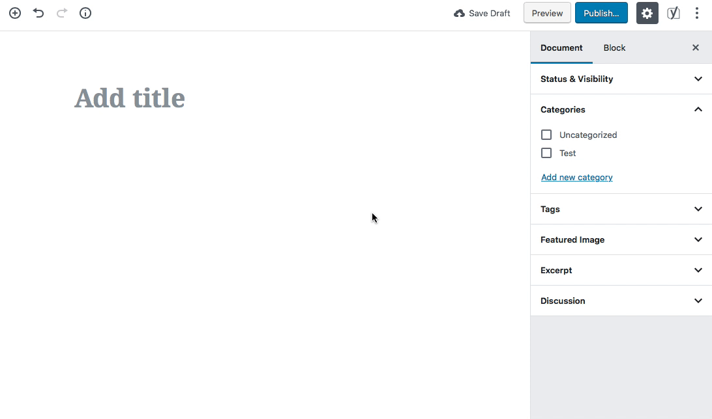

Intro to WordPress
What is WordPress?
WordPress is free web software you can use to create and manage a website or blog.
WordPress is
Popular
WordPress is the #1 content management system in the world (60.9% market share).
WordPress is
Popular
- WordPress is used by 34% of sites on the web.
- WordPress 5.2 has been downloaded over 33 million times
WordPress is
Free, open source, web-based software
WordPress core software is built by hundreds of community volunteers. People all around the word contribute to WordPress by either submitting bugfixes, testing, designing or writing code for the software.
WordPress is
A website building framework
WordPress is a platform for building and designing a website.
WordPress is
A content management system
WordPress allows site owners to manage their site content via an easy-to-use admin.
WordPress.org vs. WordPress.com
- WordPress.org - Web software used to build a website on a hosting account with a domain name. Sites can be built and modified using themes, plugins or custom code
- WordPress.com - A free blogging service that allows people to create a blog hosted on WordPress.com's servers. Hosting is free (although there are some for-pay add-ons), theme choices are limited, plugins can not be installed and code can not be modified
A Tour of the Front End
WordPress comes with the default theme Twenty Nineteen
- A sample post on the home page.
- A sample page
- A sample comment
- A sample tag line "Just another WordPress site"
- A set of sidebar widgets
A Tour of the Backend Admin
Located at: yourdomain.com/wp-admin/
The admin is divided into 3 areas:
- The top menu bar
- The left-hand menu used to navigate to most admin functionality
- The main content window where most admin functionality is performed
A Tour of the Backend Admin
Located at: yourdomain.com/wp-admin/
Tip: You can change what's displayed on an admin page by clicking on the "screen options" tab in the upper right corner.
Another Tip: Open the front end of your site in one browser tab and the backend in another so you can easily switch between the 2 as you make changes to your site.
Adjusting Site Settings
The Settings menu
- General: Title, tagline, site address, date format, etc.
- Writing: Post-related settings
- Reading: Set site home page, # of posts, rss settings and search engine visibility
- Discussion: Manage comment settings
- Media: Make default image sizes and other media settings
- Permalinks: Define the structure of site URLs
Changing Site Appearance
The Appearance menu
- Themes: Manage the current theme in use and other installed themes
- Customize: Change your theme's appearance and see a preview before going live.
- Widgets: Manage widgets you can add to site sidebars or other "widgetized" areas
- Menus: Manage navigation menus
- Header: Manage header elements
- Editor: Dangerous way to edit theme and plugin flies, sometimes disabled for security
Changing Site Appearance
The Customizer
Make customizations to your site's appearance and preview them in real time before making them live.
Adding Content
Pages and Posts
- Pages: Regular static website pages with content
- Posts: Entries (like blog posts) that have a date, categories and tags assigned to them. They can be listed in a particular order (chronologically, alphabetically, etc.) and fed to other sites or blog readers via an RSS feed
Adding Content
Pages
- Page Title
- Permalink: Manage the name of the page URL
- Page Content
- Revisions: View and restore previous versions of the page
- Custom Fields: Additional fields (display requires theme support)
- Discussion: Turn comments on or off for this page
- Comments: Displays current page comments
- Slug: Manage the name of the page slug
- Author: Switch between post authors (display requires theme support)
Adding Content
Pages
- Publish Change publish status and visibility settings and view revisions
- Page Attributes: Assign a page "parent", choose template and sort order
- Featured Image: Assign an image to page (requires theme support)
Adding Content

Adding Content
Posts
- Excerpt Determine an excerpt for a post (display requires theme support)
- Send Trackbacks: More information on trackbacks
- Format: Choose between several post formats (display requires theme support)
- Categories and Tags: Assign categories and tags to allow posts to be organized by subject
Adding Content
Tip
Use the bulk editor on the page or post list to make edits to multiple pages or posts at a time (like removing comments).
Managing Menus
Appearance > Menus
Easily create and manage navigation menus
- Create menus: Enter a menu name and click "Create Menu"
- Add pages: Add existing pages, custom links or category pages
- Order Pages: Drag and drop your pages menu items in the desired order. Indent pages to make them children of other pages
- Assign Menu to Theme location: When the menu is ready, assign it to a theme location and click "Save Menu."
- Manage Locations Tab: Assign menus to theme locations
Managing Menus
The Customizer
Manage your menus AND pages at the same time.
Managing Comments
The Comments menu
View, approve, delete and mark comments as spam.
Managing Media
The Media menu
View all files that have been uploaded to the site via the content editor. Add, edit and delete files.
Managing Users
The Users menu
- Manage existing users: Edit all user data or delete users
- Add new users: Assign new users to site
- Your Profile: Edit your own profile settings
Managing Users
User roles
Users can be given certain levels of editing privileges.
- Administrator: access to all the administration features within a single site
- Editor: ability to publish and manage posts including the posts of other users
- Author: ability to publish and manage their own posts
- Contributor: ability to write and manage their own posts but cannot publish them
- Subscriber: ability to only manage their profile
What are Plugins?
Plugins can extend WordPress to do almost anything you can imagine.
Plugins are
Powerful
Plugins are used to add functionality to WordPress. Examples include ecommerce, SEO, forms, photo galleries, social media sharing, forums and much more!
Plugins are
Often Free
Right now there are 56,303 free plugins in the official WordPress Plugin Directory.
Plugins
Plugins menu
WordPress comes with 2 plugins:
- Akismet: Protects your blog from comment and trackback spam. This plugin requires an Akismet key
- Hello Dolly: Adds a random lyric from "Hello Dolly" to the upper right-hand corner of admin screen.
Plugins
Managing Plugins
- Activate/Deactivate: Turns plugins "on" and "off"
- Edit: Ability to edit plugin files NOT RECOMMENDED
- Delete: Delete deactivated plugins
Plugins
Finding plugins
- Searching under Plugins > Add New
- Browsing the WordPress Plugin Directory
Plugins
3 ways to install plugins
- Clicking "Install Now" from "Install Plugins" search results
- Download a plugin zip file and install it via the "Upload" link
- Unzip the plugin files and upload it via FTP to the
/wp-content/pluginsfolder
Plugins
Usage tip
Plugins often use shortcodes to add content to a page or post.
For example, the plugin Contact Form 7 uses the shortcode [contact-form-7 id="105"] (the ID is the ID of the form) to allow you a form to a page or post.
These will start getting replaced with Gutenberg blocks.
Plugins
Security tip - Vet plugins first
- Ratings Read the plugin reviews
- Maintenance Check to see it the plugin has regular updates
- Support See if the plugin developers regularly answer support questions
What are Themes?
A WordPress theme determines the overall design and layout of a WordPress website.
Themes are
Powerful
In addition to defining how a site looks, it can also with with specific plugins to enhance functionality.
Themes are
Often Free
Right now there are over 3,615 free themes in the official WordPress Themes Directory.
Managing Themes
Appearance > Themes
WordPress currently comes with 2 themes: Twenty Seventeen and Twenty Sixteen.
Under Appearance > Themes is a list of all installed themes. The theme in use is labeled "Active."
Themes
Appearance > Themes
"Live Preview" before you activate or customize a theme
Click "Customize" under the current theme or "Live Preview" under an available theme to see how a new or modified theme will look before you commit to it.
Themes
Finding new themes
- Searching under the "Add Themes" tab
- Browsing the WordPress Themes Directory
Themes
3 ways to install themes
- Install right from the "Install Themes" tab
- Download a theme zip file and install it via the "upload theme" link
- Unzip the theme files and upload it via SFTP, FTP, Git, etc. to the
/wp-content/themesfolder
Resources
Attend a WordCamp
WordCamps are affordable, informal, community-organized WordPress conferences held all over the world. They are packed with workshops geared toward WordPress users, designers and developers.